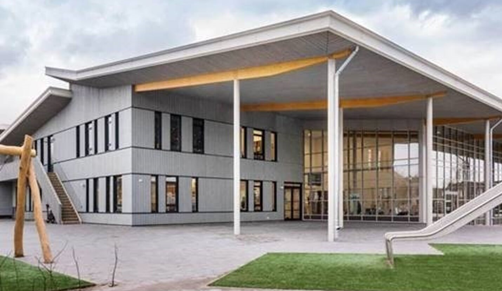

beekgraaf
de beekgraafdit was mijn eerste basischool tot aan groep 5 was dit een
prima school daarna werdt het wat minder omdat mijn broer en ik wat
problemen hadden en deze school deed daar niks aan dus zijn we in
groep 7 naar een andere basischool gegaan om daar onze basischool af
te maken

obs de brinck
dit is de 2e basischool hier hebben mijn broer en ik onze
basisschoolafgemaakt dit was een veel fijnere omgeving als bij mijn
vorige basischool hier heb ik ook veel vrienden gemaakt die ik nu nog
regelmatig spreek dat is heel erg fijn daarnaast hebben ze ons ook
hier erg goed ontvangen toen wij hier kwamen en over het algemeen een
goede tijd gehad ( deze school bestaat niet meer omdat hij permanent
is gesloten dus ze hebben ook geen website meer)
udenscollege
dit is de middelbare school waar ik naar toe ging dit was een redelijk
goede school een aantaal dingen wat beterkonden zoals de stages die
waren voor mij niet te doen maar voor de verder rest heb ik hier een
goede ervaring aan overgehouden ook ben ik hier erachter gekomen hie
het voelt als klasgenoten je backstabben en dus heb ik hier weinig
vrienden gemaakt en vooral de hecte vrienden die ik had gemaakt op de
basischool behouden
koningWillem1College
ik heb kw1c hier bij gezet omdat ik de opleiding bouwkunde
architectuur heb gedaan (niet afgemaakt) en dat was ook op het koning
willem 1 college. dit was een goede opleidingals je graag niet
gestoord wil worden en zelf wilt uitzoeken dan is deze opleidingvoor
jou dit was een goede opleiding maar ik heb dit gedaan terwijl er
corona was dus in het 2e jaar van eze opleiding konden we weer naar
school maar toen besefte ik als snel dat deze opleidingtoch niks voor
mij was dat komt omdat ze je in de 2e al alles tot bijna alles zelf
laten uitzoeken en ze zeggen "hier heb je de opdracht zoek het maar
uit succes" dat is niks voor mij omdat ik graag hou van uitleg en
duidelijk heid en dus ben ik nu op de opleiding sofware Developer
uitgekomen
jumbo
dit was mijn eerste bijbaantje toen ik 15 was het was een goede
bijbaan voor een 15 jarige al ben ik in 2018 hier gestopt omdat ze
vonden dat ik niet geod mijn best deed dit vond ik niet logisch maar
goed jumbo wel en ben ik dus iets anders gaan doen
subway
bij de subway heb ik maar 6 maanden gewerkt toen gooiden ze me er al
weer uit ze zeiden tegen mij dat ik hier niet voor geschikt was en ze
lieten me na de training al weer gaan ik dacht zo van huh hoe kun je
dit als bedrijf doen maar goed toen door naar de volgende
dominos
bij dominos ging het wel prima alleen kreeg ik maar geen werk kleding
ik heb anderhalf jaar lang zonder werk kleding gewerkt en ik heb dit
meerdere keren aangegeven maar de manger deed hier niks aan hij zij
van wel maar heeft dat nooit gedaan het waren leuke collega's waar ik
mee gewerkt heb alleen het management was niet om aan te zien ze
planden mij bijna niet in terwijl ik aan had gegeven 3 keer in de week
te kunnen werken maar niet inplannen dus ben ik op een gegeven moment
een bijbaan erbij gaan zoeken en komen we bij de laatste bijbaan aan
mcdonalds
de Macdonalds ik ben hier in december begonnen met werken en van wat
ik kan zeggen is dat het leuken coleegas zijn de werksfeer is hier
echt heel goed en ze geven de planning een maand vante voren op zodat
je weet waar je aan toe bent de ervaring die ik hier heb opgelopen is
het is een hele fijne werkomgeving
 beekgraaf
beekgraaf
 udenscollege
udenscollege
 koningWillem1College
koningWillem1College
 jumbo
jumbo
 subway
subway
 dominos
dominos
 mcdonalds
mcdonalds